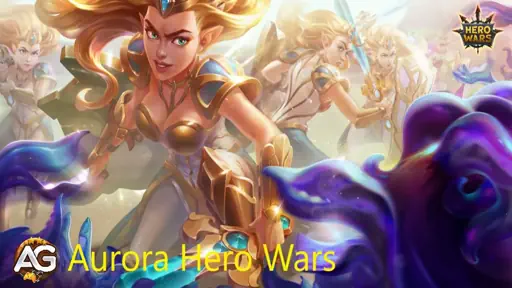
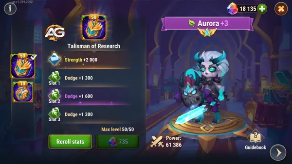
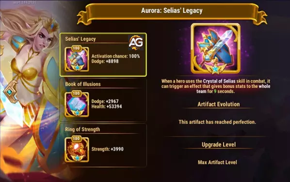
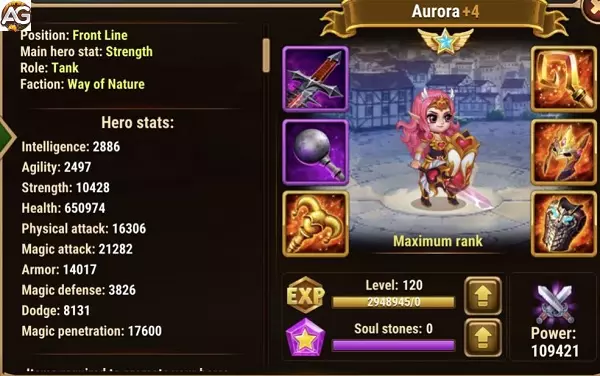

Aurora, the protective light of Riversar, is a formidable force in Hero Wars Alliance. Her inspiring story and formidable abilities make her a valuable addition to any team.
By understanding her abilities and strategies to maximize her potential, players can unlock the full power of this paladin and lead their team to victory in epic battles against the forces of darkness.
Discover Aurora's unmatched potential as a tank in Hero Wars Alliance! Dive into her inspiring story and master key strategies to utilize her resilience and protective abilities, transforming her into a powerful force against enemy attacks. Unveil the secrets of turning Aurora’s light into a shield for your team.

Illustration of Aurora from the game Hero Wars Alliance, developed by Nexters.
Aurora Main Stats in Hero Wars Alliance
Table: Aurora Main Stats
Main Attributes
Details
Position:
Front Line
Function:
Tank
Main Stat:
Strength
Faction:
Nature
How to obtain:
Events, Heroic Chest, Campaign
Tier List 2025
Tier List 2025
Rank
Hero Overall Tier List:
A+
Hydra Tier List:
A
The Protective Light: Unveiling Aurora's Potential in Hero Wars Alliance
In the vast universe of Hero Wars Alliance, where the battle between the forces of light and darkness unfolds, Aurora's presence shines like a guiding star. Her story, filled with courage and devotion, has turned her into one of the most powerful paladins of Riversar. In this tutorial, we will explore Aurora's journey and essential strategies to master her potential as the ultimate tank.
Aurora's Story
From a young age, Aurora was drawn to the light. Driven by an unusual determination, she left her home in search of a greater purpose. Her journey led her to the domains of Riversar, where she was honored to become a paladin. Assuming the role of protector and guide to her people, Aurora became a bright light in dark times, inspiring hope and courage in all who crossed her path.
How to Use Aurora's Strategy
As the primary tank of the nature faction, Aurora stands out for her incredible resilience and protective abilities. Her ability to absorb 80% of magical damage received, converting it into damage for the enemy team, makes her an unwavering fortress on the battlefield. This unique advantage not only protects allies but also inflicts significant damage to adversaries.
Additionally, Aurora has the ability to stun nearby enemies, providing a valuable opportunity for her team to gain tactical advantage and launch decisive attacks. This ability to control the battlefield, especially against enemy frontline tanks, is crucial in determining the course of battle in favor of her team.
Although Aurora may not be as feared in Hero Wars Alliance as in the web version, her presence is still formidable. She remains one of the best choices for investment and essential for strengthening any team.
Maximizing Aurora's Potential
Strategic Positioning: Place Aurora at the frontline to absorb as much damage as possible and protect the most vulnerable allies. Her exceptional resilience allows her to lead the attack and maintain pressure on enemies.
Skill Synchronization: Make the most of Aurora's stunning ability by synchronizing it with your team's attacks to maximize impact. Use the stun to interrupt important enemy abilities or to create openings for decisive attacks.
Strategic Combinations: Explore team combinations that complement Aurora's abilities. Heroes with healing or defensive abilities can further increase her durability, while those with high damage can capitalize on enemy weaknesses created by her stuns.
Energy Management: Be mindful of Aurora's energy management to ensure she can use her abilities when most needed. Balance the use of her damage absorption and stunning abilities to ensure a constant impact on the battlefield.
Guide to Aurora's Talisman Research
With the Aurora Talisman, Aurora will gain an additional 80,000 health points and 6,600 evasion points, bringing her total evasion points to 14,131.
This significant boost in stats will greatly enhance Aurora's survivability and effectiveness in battles, allowing her to synergize well with dodge-based teams, particularly when paired with Dante.
Research Talisman Attributes
Slot
Statistic
Points
0
Strength
+2000
1
Dodge
+2200
2
Dodge
+2200
3
Dodge
+2200

Aurora with the Talisman of Research, Hero Wars.
Aurora’s Second Talisman: The Talisman of the Paladin
The second talisman for Aurora, the Talisman of the Paladin, transforms her role by enhancing her magic attack and providing magic penetration, making her much more effective as a magical tank with strong offensive capabilities. This talisman is ideal for building aggressive, mage-oriented teams, where Aurora’s boosted magic stats can significantly increase her damage output. The magic penetration allows her to bypass enemy magical defenses, ensuring that her skills are more impactful in battles.
This talisman works exceptionally well in synergy with mage-focused lineups, especially with heroes like Mojo and Alvanor. In these teams, the Talisman of the Paladin allows Aurora to serve not only as a front-line defender but also as a serious threat to opponents, amplifying the overall magic damage potential of the team. This setup shines in Nature-based teams or other compositions where Aurora’s magical prowess can be maximized, creating a strong balance between defense and offense.
Given that dodge-based teams are popular in Hero Wars Mobile, the Talisman of the Paladin provides an excellent alternative, allowing players to pivot Aurora toward a more aggressive role depending on team needs. This talisman isn’t difficult to obtain during event days, making it accessible for players who want a versatile, magic-heavy tank option in their lineup.
Aurora with the Talisman of the Paladin, Hero Wars.
Aurora Pros and Cons
Pros
Positive Points
Stuns nearby enemies
Deals Magic damage
Absorbs magic damage and converts it into damage
Has high dodge against physical damage
Cons
Negative Points
Low armor defense
Does not have Armor Penetration artifact
Stats Evolution Priority
Aurora Glyphs Priority
In Aurora's glyphs, prioritize dodge and then strength, as strength is your main stat and the calculation of percentage of dodge is based on the amount of the hero's main attribute plus the amount of dodge. Third, level up Health to gain more durability and also make your fourth skill stronger. Lastly go up magic penetration and magic attack.
Priorities
Glyphs
Stat boost
1st
Dodge
+1120
2nd
Health
+30800
3rd
Strength
+560
4th
Magic Drilling
+3360
5th
Magic Attack
+3360
Aurora Artifacts Priority
In Aurora's artifacts, prioritize the book to gain more health and dodge, then the ring to gain more health and raise the main attribute and finally the weapon to give dodge to the whole team when activated.
Priorities
Artifacts
Stat boost
1st
Book
Dodge +2967 Health +53394
2nd
Ring
Strength +3990
3rd
Weapon Legacy of Selias
Dodge +8898

Aurora Artifacts, Hero Wars.
Aurora Skin Priority
In Aurora's skins, prioritize dodging for teams with Octavia and Armor for other types of teams. Then level up and strength to gain durability, and finally magical penetration to cause more damage.
Priorities
Skins
Stat boost
1st
Dodge
+2960
2nd
Armor
+10650
3rd
Health
+106645
4th
Health
+106645
5th
Strength
+1365
6th
Magic Penetration
+10560

Aurora with Romantic Skin, Hero Wars.
Aurora vs Hydra
Aurora is not a great hero against hydras, but can help on secondary teams against magical hydras, being able to do reasonable and good damage.
Cascade, Alvanor, Mushy and Shroom, Yasmine, Aurora
8
Lars, Nebula, Celeste, Krista, Aurora
9
Fafnir, Dorian, Keira, Julius, Aurora
10
Martha, Lars, Jorgen, Krista, Aurora
11
Lars, Jorgen, Celeste, Krista, Aurora
12
Dorian, Darkstar, Daredevil, Elmir, Aurora
13
Hélio, NoFace, Jorgen, Celeste, Aurora
14
Lilith, Phobos, Dante Arachne, Aurora
15
Lilith, Phobos, Dante Arachne, Aurora
16
Faceless, Jorgen, Dante, Arachne, Aurora
17
Helios, Dorian, Orion, Nebula, Aurora
18
Faceless, Lars, Celeste, Krista, Aurora
Aurora Skills Guide
It is important to highlight Aurora's unique abilities and how to effectively use them during combat:
1. Selias Crystal
This ability is crucial for causing area damage, hitting all enemies around the impact point. Its damage is calculated based on Magic Attack and skill level.
2. Crystal Attack
In addition to causing damage, this ability also has the ability to stun a nearby target. It is important to note that the stun chance is reduced if the target's level is above 120.
3. Piercing Light
A straight-line attack ability that causes damage to all enemies in its path. Its damage is calculated based on Magic Attack and skill level.
4. Rainbow Halo
This passive ability provides Aurora with a shield that partially absorbs magic damage. When the shield absorbs a certain amount of damage, it explodes, causing damage to nearby enemies. The amount the shield absorbs is determined by the skill level.
By mastering the use of these abilities and following Aurora's evolution strategies, you will be able to strengthen your team and face increasingly greater challenges in Hero Wars Alliance.
Continue to explore and experiment with different combinations and tactics to unlock the full potential of this incredible paladin. Always remember to adapt your strategies according to the context of the battle and the abilities of your opponents.
With determination and practice, you will be able to lead your team to victory and write your own legacy in the vast universe of Hero Wars Alliance. Good luck on your adventures!
Conclusion and Final Considerations
At the end of this tutorial on Aurora in Hero Wars Alliance, we hope you have gained a deeper understanding of the abilities, strategies, and potential of this powerful paladin. With the provided tips, you will be able to maximize Aurora's performance in your team and lead her to victory in epic battles against the forces of darkness.
Did you like our Aurora Guide Tips? Is there something you didn't understand or would like to suggest changes to? We invite you to join our comment section on the Alexandre Games Blog page. Feel free to express your opinion, clarify your doubts, and share your suggestions. Click the button below to get started:

 Alvanor
Alvanor Arachne
Arachne Chabba
Chabba Mushy
Mushy Thea
Thea Yasmine
Yasmine